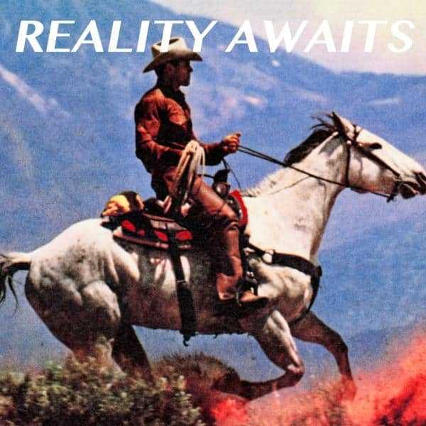

Reality Awaits
The Strokes
2026
Dites au revoir à l'ancien monde.
Le processus de création entamé il y a 15 ans sur le génial “Phrazes For The Young”, album solo de Julian Casablancas, a peut-être trouvé sa forme la plus aboutie avec le dernier album des Strokes.
À la classique et merveilleuse dialectique guitaristique stroksienne s'est ajoutée une couche noisy autotunée dont on devine l'influence créatrice de Casablancas, source probable de multiples conflits artistiques dont la presse s'est fait écho dans les 15 dernières années. Le bougre a gagné, et les membres du groupe ont accepté de jouer le jeu. Le résultat clive les fans, mais n’est-ce pas normal, au fond ?
L'oeuvre des Strokes a toujours été liée à son époque, on dit d'ailleurs d'eux qu'ils ont sauvé le rock avec la publication de l'iconique "Is This It" en 2001. Un album parfaitement dans son époque : générationnel.
Mais la nonchalance et la coolitude du début des années 2000 a laissé place a la prise de conscience hébétée d'un monde en plein effondrement.
Face à cette réalité galopante, deux choix sont possibles :
. Se lover dans la chaleur d'un sentiment familier et réconfortant pour oublier un temps la tragédie. Si c'est ce que vous souhaitez, vous auriez probablement aimé retrouver l'ambiance sautillante de "Is This It" ou "Room On Fire".
. Tenter une transformation, en phase avec l'époque aussi difficile soit-elle, mais en capacité de faire vibrer a l'unisson un public avide de mettre une émotion, un mouvement, un imaginaire sonore sur un monde a l'agonie.
Reality Awaits est terriblement magnifique, reflet de l'époque et d'une société sur le point de basculer dans un inéluctable déclin. L'homme robot augmenté s'en va tout brûler sur son passage. Les choix artistiques du groupe sont audacieux, radicaux et forts : au service du sentiment d'ébahissement devant la trajectoire mortifère de l'humanité.
En bref, les Strokes n'ont pas fini d'influencer le monde. Et vice versa.